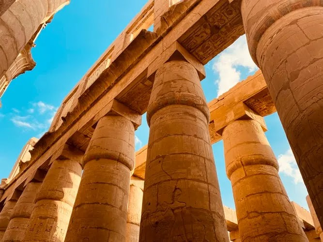
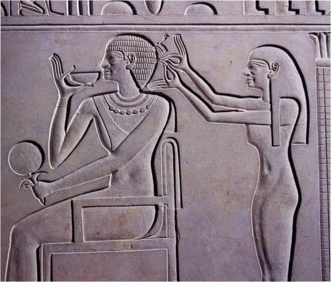
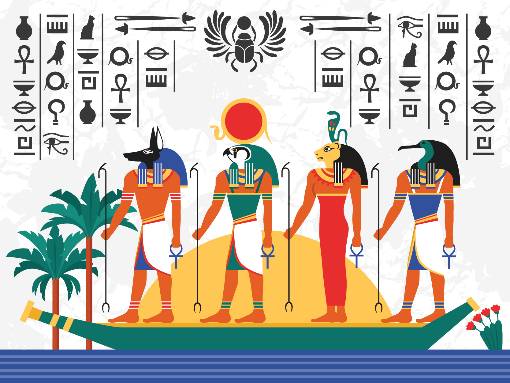
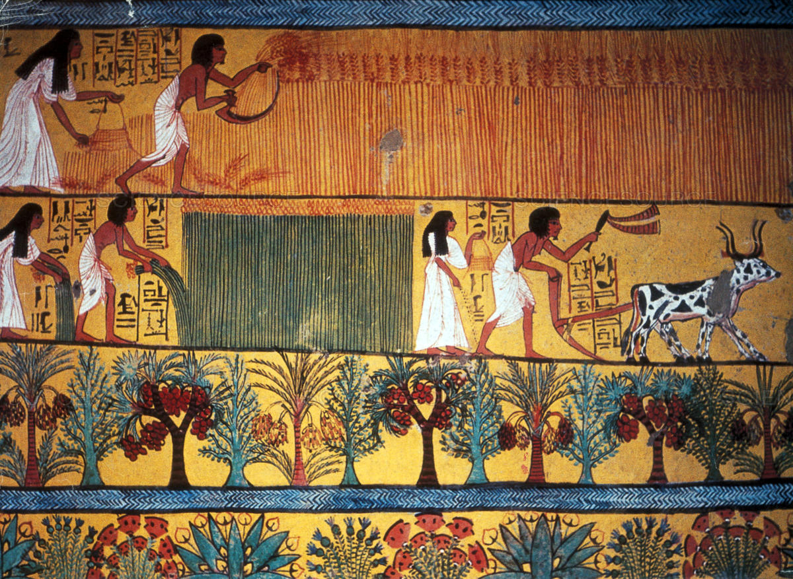
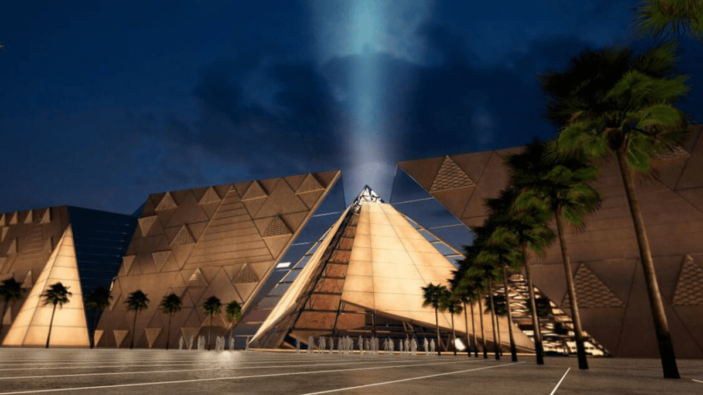
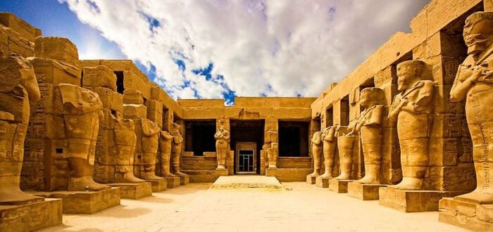
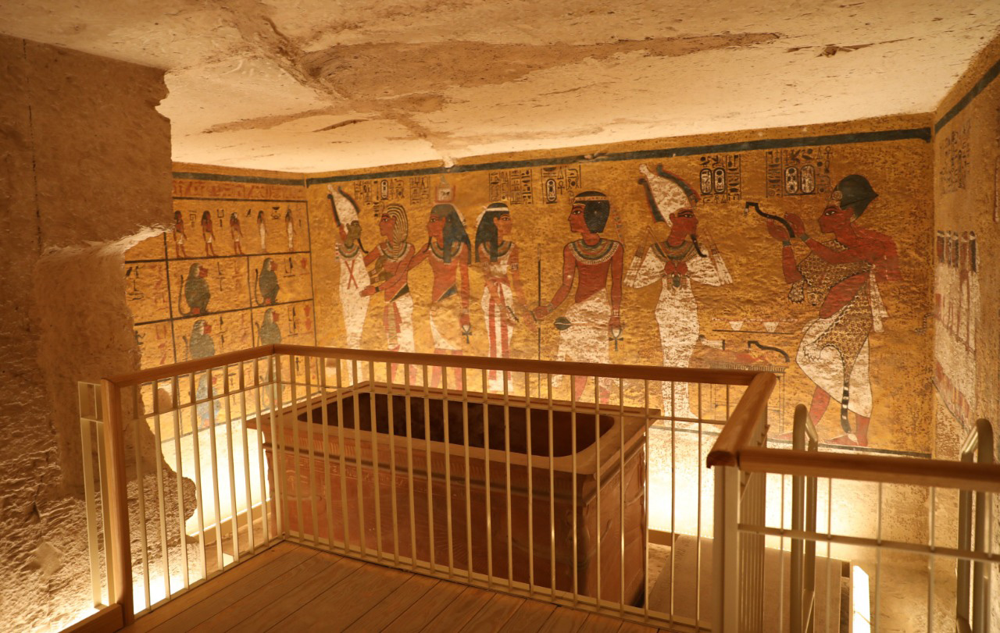

مصر القديمة ليست مجرد تاريخ، بل مدرسة إنسانية جمعت بين العلم والإيمان والفن، فأنارت للعالم طريق الحضارة.

أبدع المصريون في بناء المعابد والأهرامات والنقوش التي ما زالت تبهر العالم بدقتها وجمالها.

برعوا في الطب والتحنيط والرياضيات والفلك، واخترعوا الكتابة الهيروغليفية لتوثيق علومهم.

احترموا المرأة وشاركَت في الحكم والعمل والتعليم، وكان للأسرة مكانة مقدسة في المجتمع.

آمنوا بالبعث والخلود، فبنوا المعابد والمقابر لعبادة آلهتهم وتكريم الموتى في رحلتهم الأبدية.

اعتمدوا على نهر النيل في الزراعة، ونظّموا الري والتجارة، فازدهر اقتصادهم على مر العصور.

يقع بجوار أهرامات الجيزة، وهو أكبر متحف أثري في العالم يعرض آلاف القطع الأثرية بتقنيات عرض حديثة.

أعجوبة العالم القديم التي ما زالت قائمة حتى اليوم، رمز العبقرية الهندسية والدقة المعمارية الفريدة.

تمثال ضخم يجمع بين جسم أسد ورأس إنسان، يرمز إلى القوة والحكمة والحماية.

أكبر مجمع ديني في العالم القديم، يجسد روعة الفن والعمارة المصرية القديمة.

اكتشافها كشف أسرارًا عظيمة عن حياة الملوك والفن المصري القديم.
استخدم الفراعنة العلم والإيمان لبناء حضارة خالدة، فلنتعلم نحن كيف نجعل التكنولوجيا وسيلة لحفظ مجد أجدادنا.